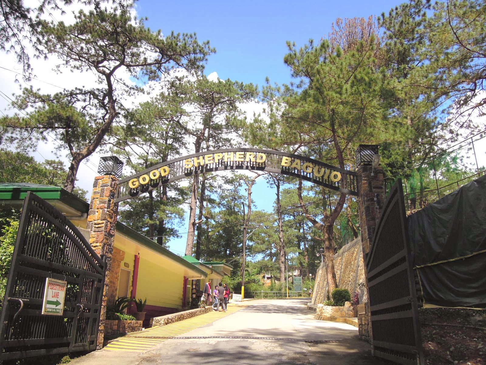

About Good Shepherd Convent
The Good Shepherd Convent is known across the Philippines for its delicious local products, including ube jam, strawberry jam, and peanut brittle. Each purchase helps support the education of Cordillera youth through the Good Shepherd Scholarship Program.
Nearby Spots & Attractions
- 🌸 Mines View Park (5 mins walk)
- 🛍️ Mines View Souvenir Stalls
- ☕ Coffee Shops along Outlook Drive
- 🐎 Horseback Riding Area nearby
Map Location
The map below highlights the convent’s exact location and nearby access points for your visit.